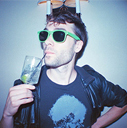
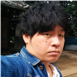
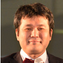
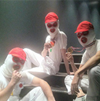

![TOKYO GAME SHOW 2015
Business Day 2015.9.17[Thu]-18[Fri] Public Day 2015.9.19[Sat]-20[Sun] @ Makuhari Messe](../../common/images/maintitle_en.png)

![Business Day 2015.9.17[Thu]-18[Fri] Public Day 2015.9.19[Sat]-20[Sun] @ Makuhari Messe](../../common/images/sp_date_en.png)

Cooperation by：International Game Developers Association Japan Chapter(IDGA Japan)
SENSE OF WONDER NIGHT 2015
Screening Committe
※Alphabetical Order
- NHN PlayArt
- Kazuaki Baba
Baba joined NHN Japan in 2004 as game server programmer. After serving as a director of Game Development Division and Game Business Division, Mr. Baba is currently assigned as Executive Officer and Senior Manager for Smartphone Game Production Department. Since splitting up from LINE Corporation, he manages in-house smartphone game development as an executive director.

- Necrosoft Games
- Director
Brandon Sheffield
Brandon Sheffield is director of indie game studio Necrosoft Games, former editor in chief of Game Developer magazine, and co-founder of the east bay game dev group, and multiple game jams. He occasionally still writes for Gamasutra.com as their senior contributing editor, and is an adviser to multiple game conferences and competitions, including GDC, Digital Dragons, Sense of Wonder Night, Pixel Heaven, and GDC China. He likes connecting people, making weird things, living in Oakland, and speaking at game conferences in exotic places.
- Joju Games
- Studio Manager
Juan Gril
As Joju Games Founder and Studio Manager Juan Gril has more than 15 years of experience developing casual games. Joju Games produces casual games for international clients including Atari, MTV Networks, and Disney. Juan is the Director of the Indie Showcase at Casual Connect, Advisor for the Free2Play Design and Business Summit at GDC, and an Editor of the IGDA Casual Games White Paper as well as The former head of Yahoo! Games Studios and a founding member of the team. He thinks the video game is the coolest thing ever.

- Shindenken
- Circle head, Game Planner, Programmer
Isao Kitayama
Kitayama has established Shindenken in 2002. He has served Comic Market 20 times and has addressed Dorkbot, Sense of Wonder Night, and IGDA conference. He has developed more than 20 game titles including "I will be God of the Forest World", "Genius Scientist Bio Ruru", and "QUALIA". His game creation continues especially in the areas applied with AI technologies such as artificial life, and celluar automation.
- GREE
- Lead Game Designer
Wright Flyer Studios Unit
Shota Shimoda
I started working for GREE in 2012 and engaged in the launch of Shoumetsutoshi project after application development/operation. Currently I am a director and scenario writer of Shoumetsutoshi.

- Journalist, the Director Emeritus of IGDA Japan
- Kiyoshi Shin
Born in 1970, He is Journalist (Video Game / IT) and the Founder and Director Emeritus of International Game Developers Association Japan (IGDA Japan). He is also the instructor at Ritsumeikan University College of Image Arts and Science. He contributes articles to Nikkei newspaper online technology corner, Famitsu.com "Digital and Dream Power of Human".

- UBM Tech Game Network
- (Independent Games Festival, Game Developers Conference.)
Simon Carless
Simon is the EVP of UBM Tech’s Game Network, meaning that he manages products such as Game Developers Conference - both the San Francisco mothership and satellite shows in Los Angeles, Germany, and China. He is Chairman Emeritus of the yearly ‘Sundance Festival for games’, the Independent Games Festival, which holds its awards at Game Developers Conference yearly, and co-programs the Independent Games Summit events at 3 of the 4 GDCs. He also devised and co-founded prominent indie game bundle website IndieRoyale.com.

- Sony Computer Entertainment
- Developer Relation Group Manager
Publisher Relation Dept.
Koji Tada
Koji joined SCE in 1994 and has produced multiple titles for PlayStation® as a director. He managed Motion Capture Studio and Sound Team, then engaged in production of several game titles as a producer from 2000. Since 2013 he is in charge of developer relation of Asia region in SCE.

- Zako-Zako
Zako-Zako achieved three consecutive years' presentations and awards winning Hudson/GMO award in SOWN2011, GMO award in 2012 and BestPresentationAward by TSURI last year. Every year is shocking game idea brought on the stage with heavy excitement from audience. Presentation style may be much to do with such excitement. Regardless of a rumor that awarded games would be ghost-written, they are selected as screening member. They are a middle age creative gang caring for applications without scenario.

2002-2015 CESA / Nikkei Business Publications, Inc. All rights reserved.